系统管理
系统参数管理
系统管理员在安装完成之后，首要的任务是维护公司结构，操作步骤如下：
首先以系统管理员身份登录系统。 点击菜单“系统管理”-> 系统参数管理，进入系统管理，维护参数配置。可以按照参数代码和参数名称查询出系统参数的代码、名称、取值、重要界别和参数说明。
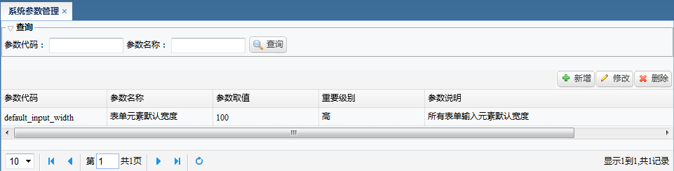
点击“新增”按钮，可以新增参数名称(参数代码、参数名称、参数值、重要级别)。 参数级别为高级的参数，只有开发人员才有权限修改。
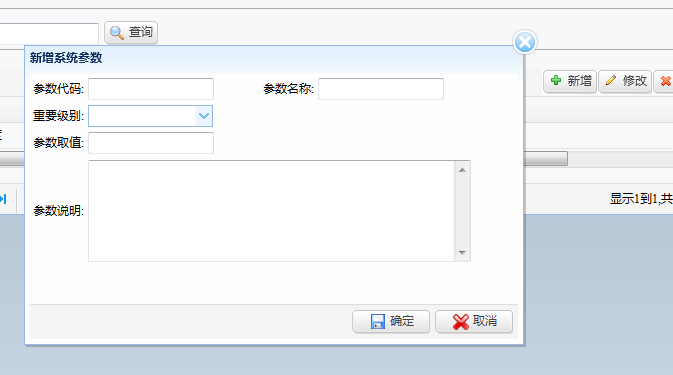
点击“修改”按钮，可修改“参数取值”和参数说明，修改完毕，点击”确定”按钮，对修改后的内容即生效。

如果某个参数不需要，或者设置错误的，可以进行删除。
选中该行，点击“删除”按钮，弹出提示，选择确定删除，即可删除该行。
数据字典管理
数据字典分类查询
系统的数据字典是字段 -> 对应对有用的数据字典名称，整个系统统一调用统一数据字典字段，统一维护。
点击菜单“系统管理 -> 数据字典管理”，进入角色管理视图。 系统展示页面上段是”字典代码”与”字典名称”查询功能。
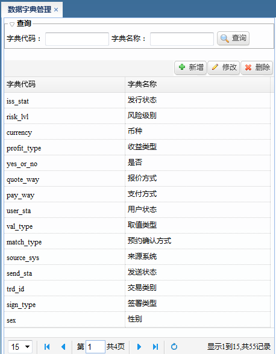
点击左边“新增”按钮新增数据字典代码与名称：
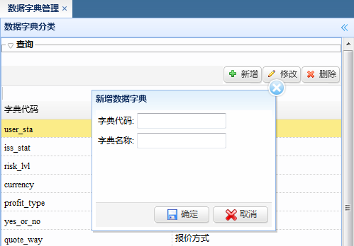
点击左边“修改”按钮修改选中行数据字典代码与名称。
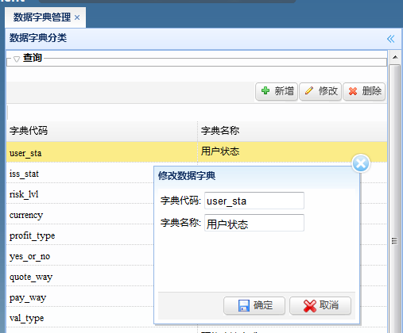
点击左边“删除”按钮删除选中行数据字典代码与名称。
选中一行数据字典，右边出现数据字典项查询， 显示改数据字典的每一项详情（字典代码、名称、取值和说明）。
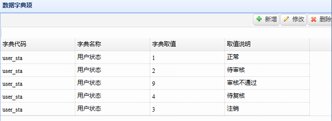
点击右边“新增”按钮新增数据字典取值与取值说明 。
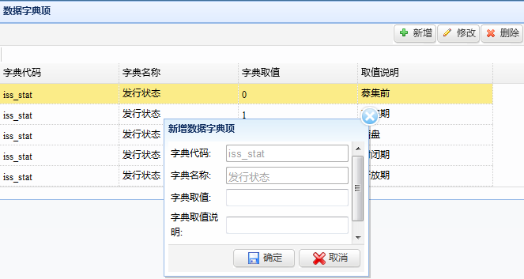
点击右边“修改”按钮新增数据字典取值与取值说明 。
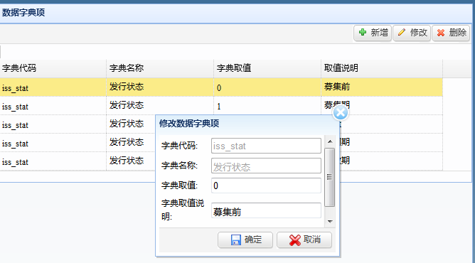
点击右边“删除”按钮删除选中行数据字典 。
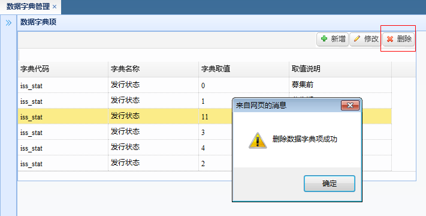
系统菜单管理
点击菜单“系统管理 -> 系统管理菜单”，进入系统菜单管理视图。
树形结构为系统菜单的父页面。
点击 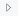 可以展示该节点下的所有子菜单，点击树的叶节点，可以新增同级菜单与子菜单。
如点”系统参数管理”菜单，在右边显示该菜单的详情:名称、用途、链接地址、菜单状态(使用情况)、说明，可以对此信息进行修改，或者对该节点进行删除.
点击第二个和第三个TAB标签,可以”添加同级菜单”,“添加子菜单“。
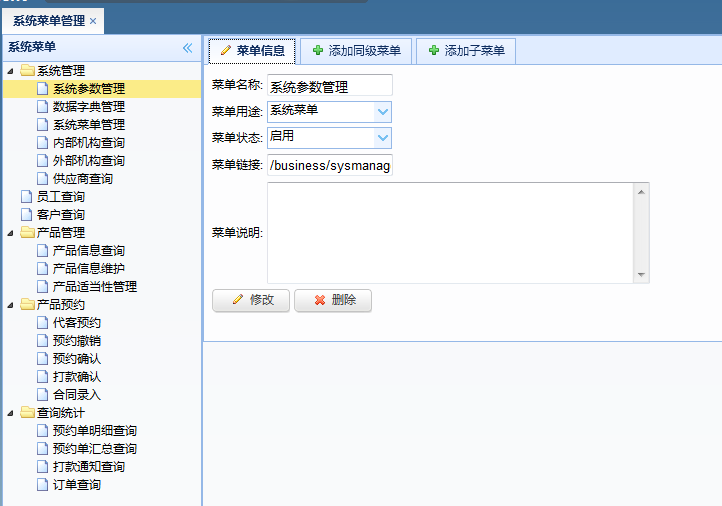
内部机构查询
以目录树的形式展示所有录入子公司级与所属性子部门，公司组织结构的统一维护界面。
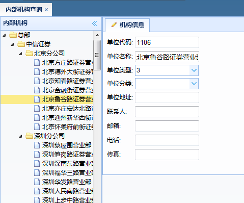
外部机构查询
点击菜单“系统管理 -> 外部机构查询”
外部机构查询，可以根据机构类型、代码和简称，来查询出外部的一些基本信息。
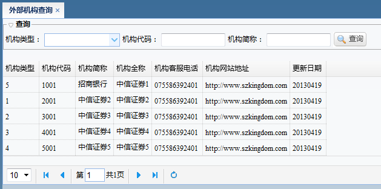
供应商查询
点击菜单“系统管理 -> 供应商查询” ，可以根据供应商代码、名称查询出供应商的证件类型、证件号码和一些联系信息。
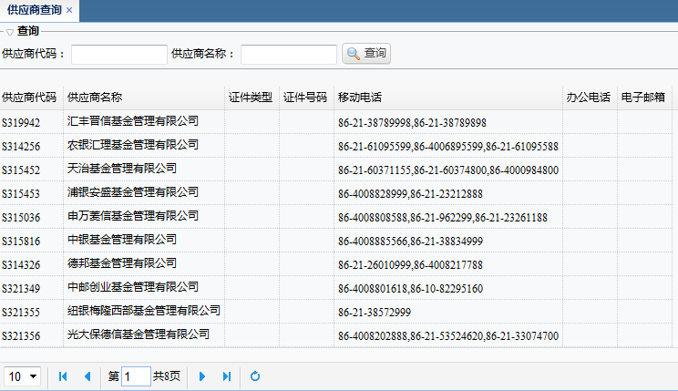
员工查询
员工管理界面记录了所有员工基本信息，包括：员工工号，姓名，状态，性别，证件类型，证件号码，部门编号，拼音编码，入职日期，学历，联系电话等。
1.点击菜单“系统管理 ->员工查询”，进入员工查询视图。
2.系统已经用表格形式展示员工的基本信息。
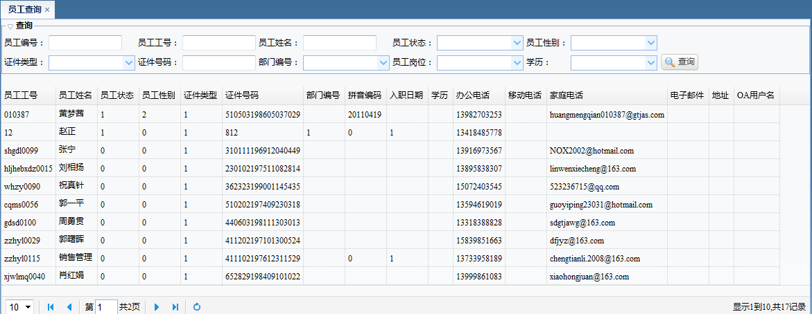
客户查询
员工管理界面记录了所有客户基本信息，包括：ECIF号，客户名称，客户全称，客户类别，客户类型，客户状态，内部机构，法人机构，性别，证件类型，证件号码，操作渠道，开户日期。
1.点击菜单“系统管理 ->客户 查询”，进入客户查询视图。
2.系统已经用表格形式展示客户的基本信息，可以根据客户标志类型，和标志取值来搜索某个客户。
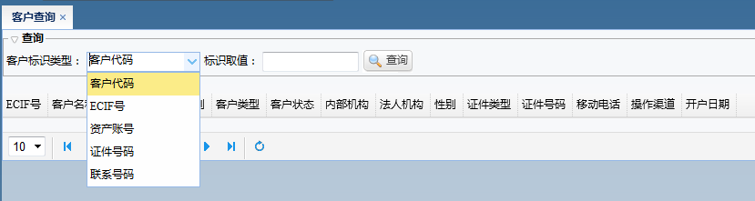
产品管理
产品信息查询
点击菜单“系统管理 -> 产品信息查询”，进入角色管理视图。
产品信息查询字段包括：发行人代码，产品代码，产品编号，产品简称，产品全称，产品子类，发行状态，管理状态，风险级别，币种，交易状态，费用模版
填写或选择页面查相关的查询条件，点击“查询”按钮，即可以已经存在的产品进行查询，查询列表显示在中间列表区域。
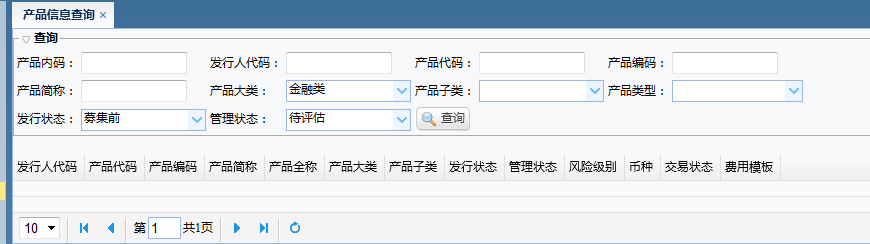
产品信息维护
点击菜单“系统管理 -> 产品信息维护”，进入角色管理视图。
产品管理维护字段包括：供应商，产品代码，产品简称，产品全称，产品大类，产品子类，产品类型，管理状态，产品来源，风险级别，推荐级别，热销级别。
填写产品内码或产品大类，点击“查询”按钮，即可以已经存在的产品进行查询，查询列表显示在中间列表区域。
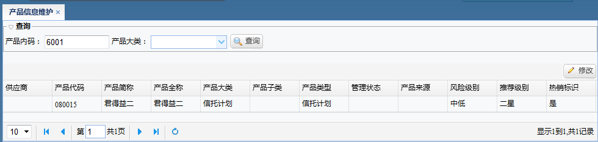
选中某一行记录，点击修改按钮。可以修改：发行人、产品状态、产品来源、推荐开始日期、推介结束日期、发行开始日期、发行结束日期、
小合同数、小合同数金额、是否需要签电子合同、预约起始时间、预约截止时间、打款截止日期。
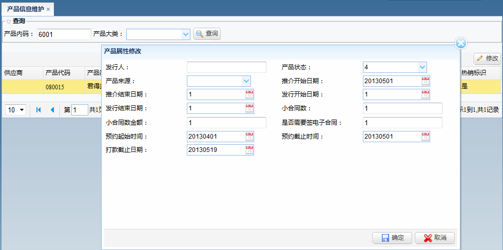
产品预约
产品预约
点击菜单，系统管理 -> 产品预约 -> 产品预约。点击产品申请录入，显示右边金融产品申请表，录入产品相关信息，选择下一处理人，点击提交。便可录入产品信息。
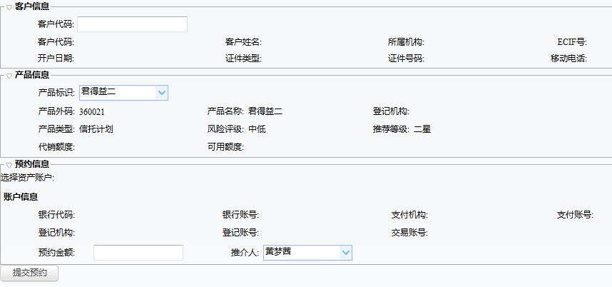
预约撤销返回顶部
点击菜单，系统管理 -> 产品预约 -> 预约撤销。选中一行记录，点击预约取消，便可撤销预约单。
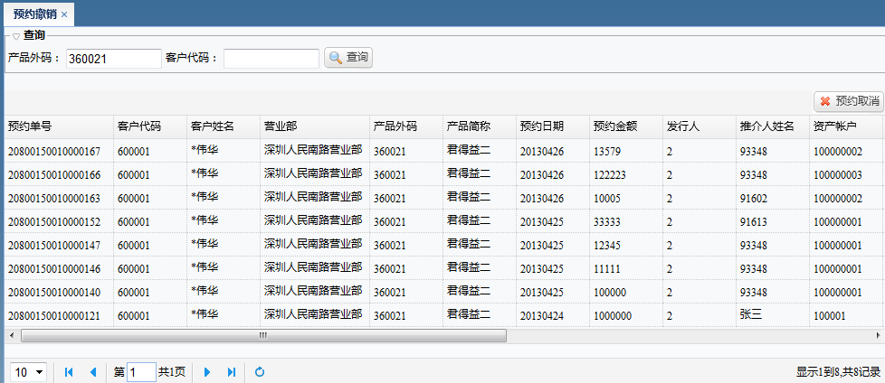
预约确认
点击菜单，系统管理 -> 产品预约 -> 预约确认。选中一行记录，输入预约状态和意见，点击预约确认，便可确认此预约单。
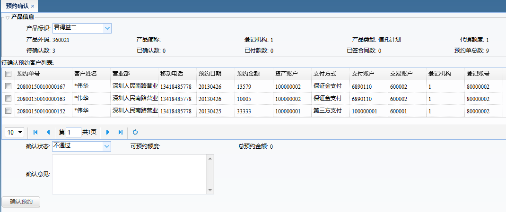
打款确认
点击菜单，系统管理 -> 产品预约 -> 打款确认。进入打款确认界面，查询出预约单号、客户代码、客户姓名、营业名称、产品外码、产品简称、预约日期、预约金额、发行人、推介人姓名、资产账户、交易账号等预约单信息。
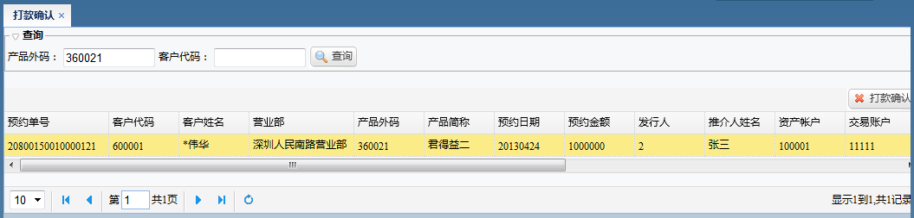
选中一行记录，点击打款确认，输入汇款金额、汇款日期、汇款银行、汇款帐号、汇款单凭条号、汇款附件等信息，点击确认。即可完成打款确认。
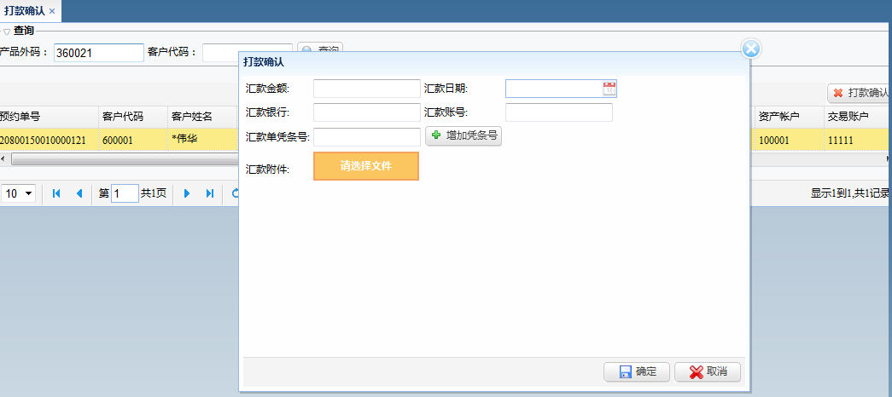
合同录入
点击菜单，系统管理 -> 产品预约 -> 合同录入。进入合同录入界面，查询出预约单号、客户代码、客户姓名、营业名称、产品外码、产品简称、预约日期、预约金额、发行人、推介人姓名、资产账户、交易账号等预约单信息。
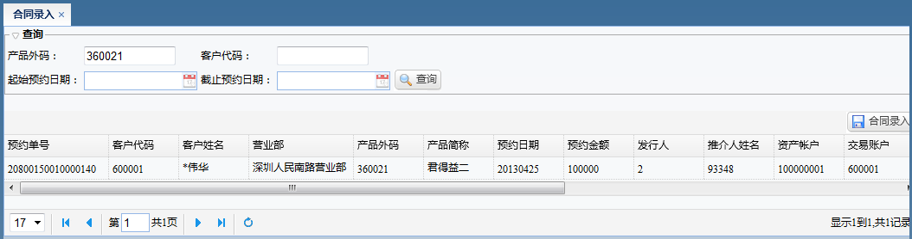
选中一行记录，点击合同录入，输入合同号、签署日期、有效日期、合同附件，点击确认。即可完成合同录入。
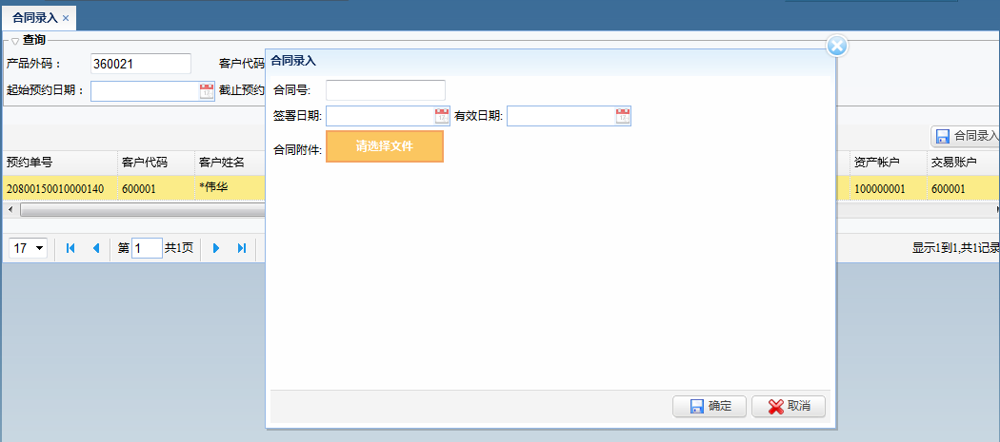
查询统计
预约单明细查询
点击菜单，系统管理 -> 查询统计 -> 预约但明细查询。可以根据预约单号、预约状态、客户代码、产品内码、起始预约日期、截止预约日期，查询出预约单号、客户代码、客户姓名、营业名称、产品外码、产品简称、预约日期、预约金额、推介人代码、推介人姓名、预约状态等预约单信息。
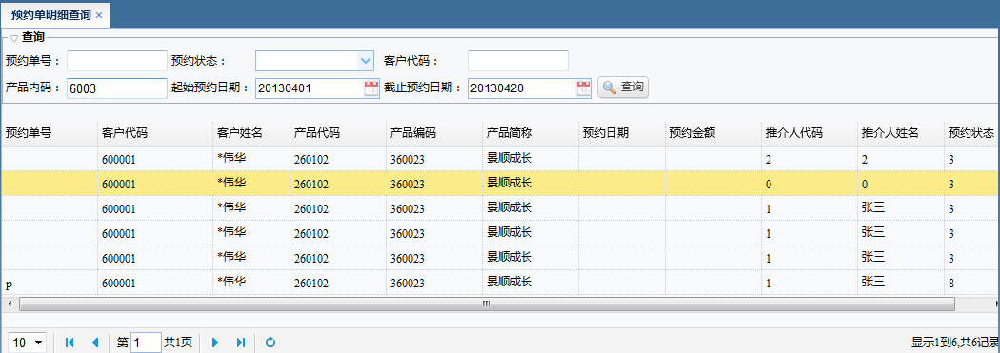
打款通知查询
点击菜单，系统管理 -> 查询统计 -> 打款通知查询。可以根据预约内码、产品内码、发行人代码、产品代码、客户代码、通知状态、起始通知日期、截止通知日期，查询出发行人名称、产品简称、客户名称、通知号码、通知日期、通知状态、通知内容等信息。

订单查询
点击菜单，系统管理 -> 查询统计 -> 订单查询。可以根据客户代码、客户名称、资产帐号、起始成交日期、截止成交日期、产品内码、发行人代码、产品代码、产品大类、产品子类、交易类别。查询客户名称、产品简称、客户简称、汇款金额、汇款日期、汇款银行、委托价格、委托数量、成交数量、成交金额等信息。
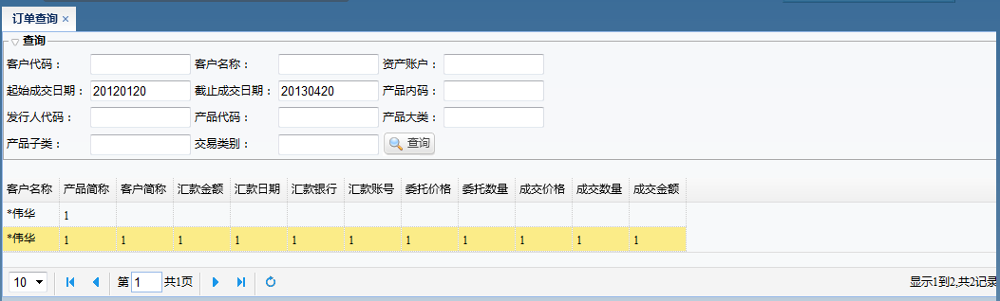